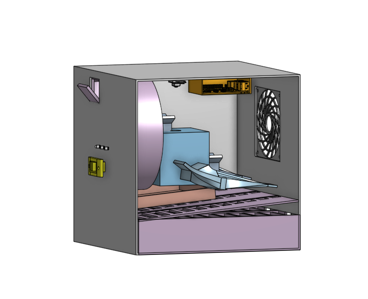
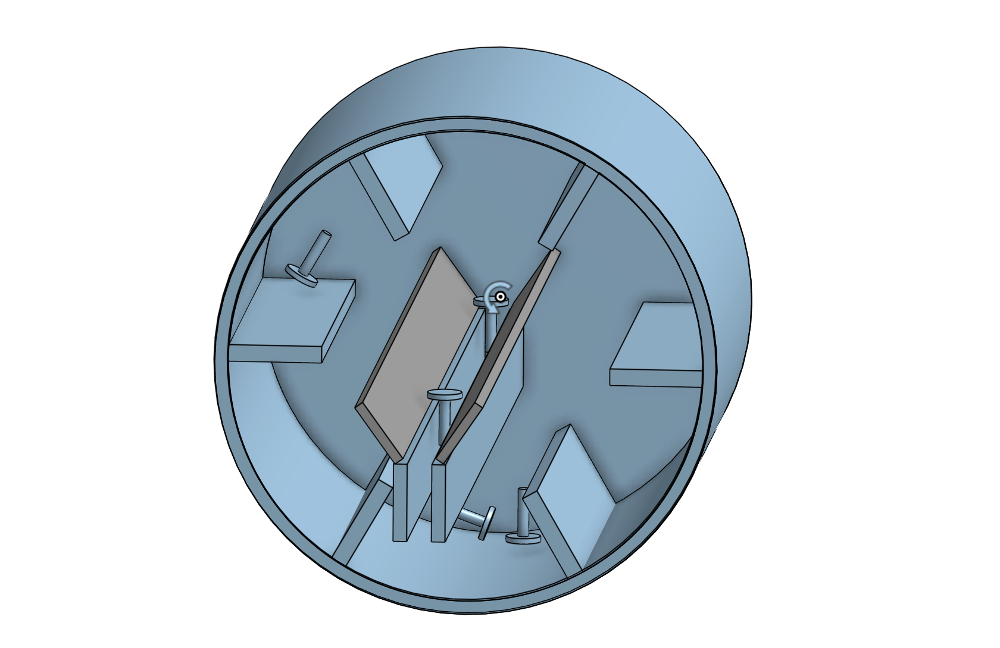
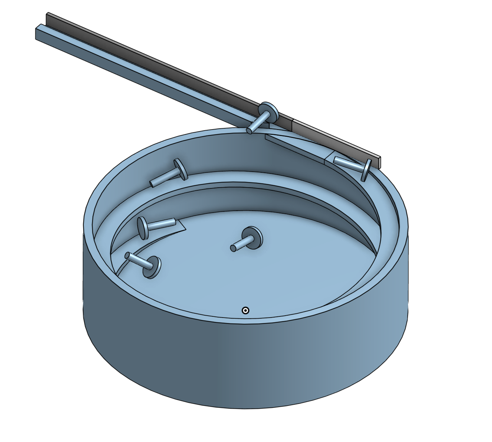
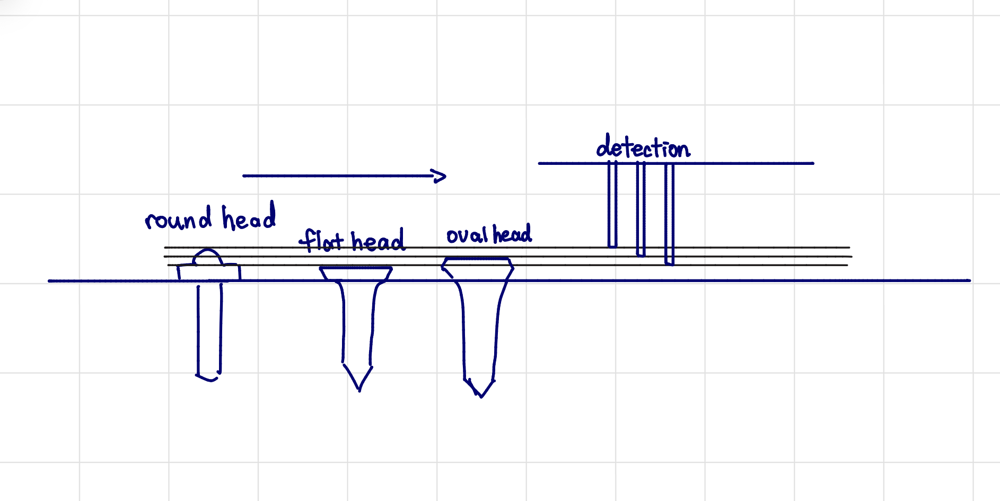
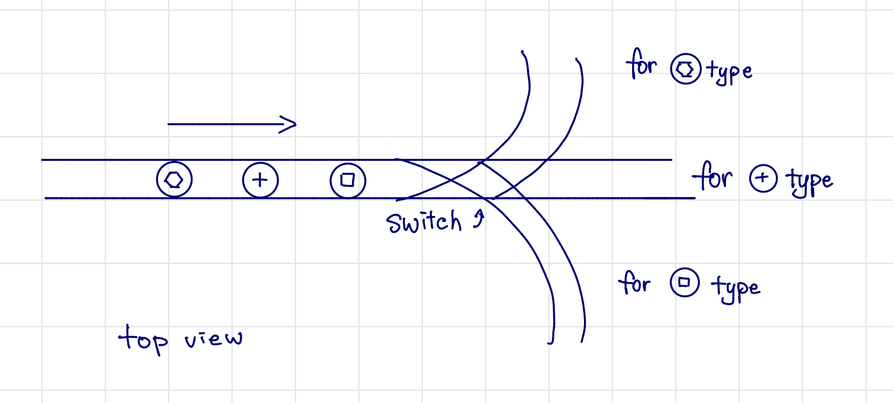
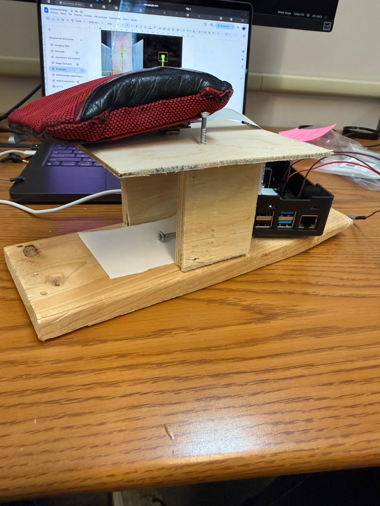
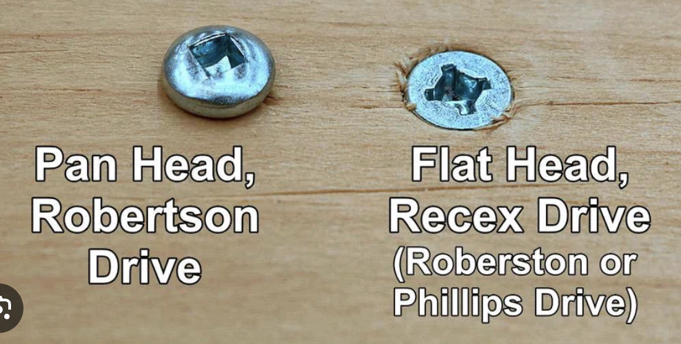
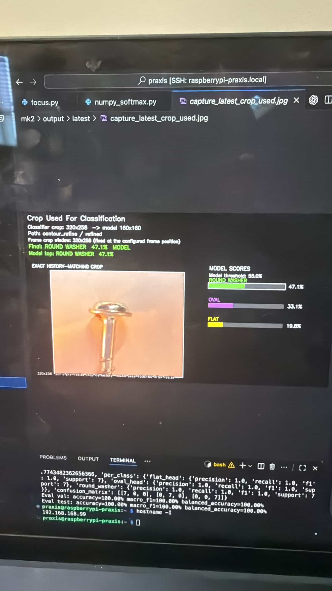
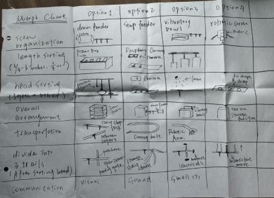
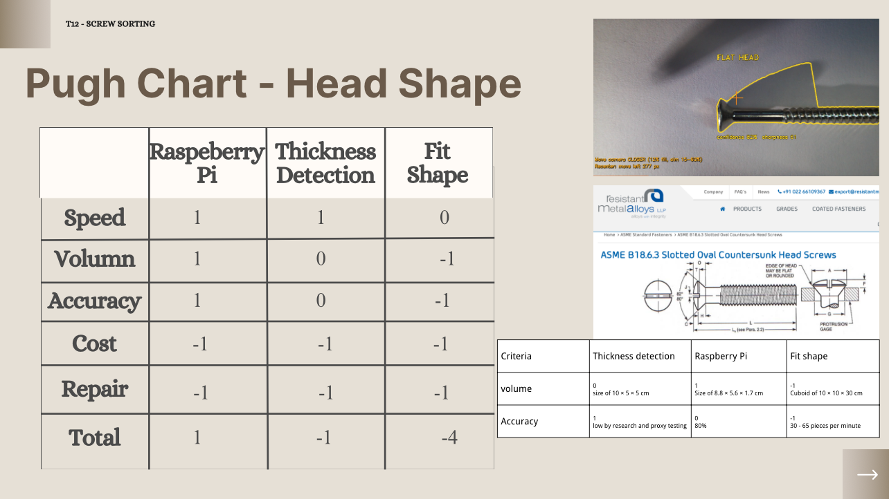

The final design consists of a box smaller than the required 30x30x30 cm. Inside the mechanism
is divided into 3 different sections:
A feed system to introduce screws into the device. The user dumps batches of unorganized
screws and the feeder orients them for the sorting mechanism.
A head shape sorting mechanism, that sorts the screws one by one into the corresponding
head shape: flat head, oval head and round washer.
A length sorting mechanism that receives the corresponding head shape and sorts
these screws by length into different bins.
For the feeder we chose to use a drum feeder that we verified by comparison. We found a reference design that
worked exactly as we wanted, therefore we knew that this is a valid approach. For the head shape sorting
we used a raspberry pi module with a camera, we trained a machine learning model and tested it with various screw samples to ensure accuracy.
For the length sorting we used a "piano box" design, where screws would roll down a slope and fall
into their respective hole, depending on the screw length.
Praxis IIMachine learningShowcaseCAD

Context
Need and stakeholders
Need
The need presented in the RFP was to sort a mixed batch of screws for
Mr. Ginsberg's workshop. The screws had to be sorted by head shape and length.
Primary stakeholders
The primary stakeholder is Mr. Ginsberg, the workshop owner who requires the screw sorting system.
Design constraints
The main constraints were:
Reliability: The system must consistently sort screws without failure.
Sorting accuracy: The system must accurately identify and sort screws by head shape and length.
Simple usage: The device had to work without human interaction apart from introducing the screws.
Economic: The device had to be cost-effective to build and operate.
Pictures
Screens & details
Click any tile to open a larger view.







Development
Three main components
Feeder
The final design uses a drum feeder to feed the screws into the system.
The feeder orients the screws and delivers them one by one into the next stage.
It works by having a rotating bowl that drops the screws into a v-shaped channel that
orients them upright.
Camera sorting
For the head shape sorting we bought a raspberry pi and a camera. We used this system to
capture images of the screws and process them to detect the shape. To classify the screws
we created a machine learning model that used a CNN classifier. We trained the model by taking
pictures of the screws sitting on the prototype and processing them using synthetic image
augmentation algorithms for data diversification.
Length sorting
The length sorting was achieved using a simple mechanical solution. We designed a "piano box"
system, where the screws would roll down a slope and fall into their respective hole, depending on the screw length.
The angles at which it is most efficient is at around 10 degrees.
Annotated process
Three CTMFs that best explain the screw sorting process
For this project, the clearest CTMFs are the ones that define the system, widen the
architecture options, and justify the final mechanism through structured selection.
Open each widget for the full annotated review.
Click any CTMF card to open the full annotated review, figures, and assessment.
Position statement reflection
How this project contributed to my position on engineering design
Exploring all designs
Especially due to the use of the morph chart, the team explored a wide range of
designs and ideas, taking into account various factors and potential solutions. This is
core to my ideal of careful planning and intentional execution.
Compromise in a team
By working in a team of high achieving people, everyone had different ideas and
considerations on how the design should work, and what approaches to take. This
experience allowed me to grow as an engineer and appreciate the value of diverse perspectives.
CTMF detail
CTMF 07
Morph chart
This CTMF explains the diverging stage of the screw sorting project.
Explanation of the CTMF
A morph chart is used in the diverging stage of a project to explore and generate a wide
range of ideas. It consists in dividing up the problem space into its components and
examining each one in relation to the others. By dividing up the design into each component,
you have more freedom to iterate on each one without being influenced by the whole design. It
makes the process of iteration much simpler and efficient. It also allows you to explore designs,
that maybe at first glance do not look possible for the project, but later on they become good.
How it appeared in the project

The morph chart CTMF was one of the most important CTMFs used in this project, because it
allowed us to divide the problem into 7 different design spaces, thus allowing us to really
explore all posibilities.
CTMF 08
Pugh chart
This CTMF explains the converging stage. It is how the team compared alternatives against
clear criteria in order to select the strongest overall concept.
Explanation of the CTMF
A pugh chart is a tool used to compare different designs against each other, to
determine what the strongest one is. It consists of a table where each design is scored
against a set of criteria. Each design receives a score, either a 1,0 or -1 depending on how
good it compares amongst the other designs. When the table is complete, with all evaluation
criteria considered then you can identify the strongest concept.
How it appeared in the project

The pugh chart was used to compare different concepts for the 3 main parts, the feeder,
the camera sorting and the length sorting. It was an essential part in the process of
convergence, because it allowed us to compare the different concepts without bias
against each other, basing the comparison on the requirements and the evaluation criteria.
Why it was useful
The pugh chart was useful, because it allowed the team to systematically evaluate and compare
different designs in relation to their performance against the established criteria. This allowed
us to make crucial decisions with minimal bias.
CTMF 09
Verification testing
This CTMF explains the representing stage of the screw sorting project. It shows how the
team used testing evidence to represent whether the selected concept actually worked.
Explanation of the CTMF
Verification testing comes after the final design is chosen (altough it can still be iterated
on) and it serves the purpose of verifying a design. To achieve this oftern times a prototype
is built and the system is tested against the requirements. Often the device is divided into
many subsystems, each of which can be tested individually.
How it appeared in the project
The team designed a physical prototype and coded python scripts to run a machine learning model
for classifying screw heads. This involved collecting data, training the model, and testing it
against the requirements. The process of training included self testing using the synthetic images.
After training we manually tested the model ourselves. This was done to ensure that the current
system works as intended and that the approach is robust.
Why it was useful
The use of this CTMF allowed us to ground our design decisions in real evidence, and
empirical data. Also it allowed the team to not only verify that the design meeths the
requirements, but also passed the validation requirements from the stakeholders.